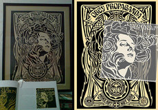

Koloman Moser
From The Giant: The Definitive Obey Giant Site
{kind=link}
From Wikipedia:
Koloman Moser (March 30, 1868–October 18, 1918) was an Austrian artist who exerted an incomparable influence on twentieth-century graphic art and one of the foremost artists of the Vienna Secession movement and a co-founder of Wiener Werkstätte.
During his life, Moser designed an astounding array of art works - books and graphic works from postage stamps to magazine vignettes; fashion; stained glass windows, porcelains and ceramics, blown glass, tableware, silver, jewelry, and furniture - to name a few of his interests.
He studied at the Wiener Akademie and the Kunstgewerbeschule, where he also taught from 1899.
His designs in architecture, furniture, jewelry, graphics, and tapestries helped characterize the work of this era. Moser drew upon the clean lines and repetitive motifs of classical Greek and Roman art and architecture in reaction to the Baroque decadence of his turn-of-the-century Viennese surroundings. In 1903, Moser and his colleague Josef Hoffmann founded Wiener Werkstätte, whose studios and artisans produced a number of aesthetically and functionally designed household goods, including glassware, flatware, silverware, and textiles.
One of Moser's most famous works was his 1899 cover for Ver Sacrum magazine. From AEIOU Encyclopedia:
Ver Sacrum, major Austrian magazine of the Jugendstil period, mouthpiece of the Vienna Secession published from January 1898 to October 1903 (monthly until 1899, then bi-monthly), owing to its mix of articles on art theory and practical examples and contributions by both domestic and foreign authors, the publication gained great influence on art production around 1900. The artistic layout lay in the hands of artists of the Vienna Secession and frequently presented original printed graphics (especially by G. Klimt, K. Moser, J. Hoffmann and A. Roller), numerous numbers were in the form of monographs and thus familiarised a broad readership with the works of individual artists who were playing an important role in the development of modern art. After 1900, Ver Sacrum was only published as an internal information journal for members of the Vienna Secession.
Moser's cover for Ver Sacrum served as the model for Shepard's 2006 works Nouveau Black and Nouveau Red.
 |
{kind=link}
{kind=link}
{kind=link}
© Copyright |
|---|
| This page contains an image or images of drawings, paintings, photographs, prints, or other two-dimensional works of art, for which the copyright is presumably owned by either the artist who produced the image, the person who commissioned the work, or the heirs thereof. It is believed that the use of low-resolution images of works of art for critical commentary on the work in question, the artistic genre or technique of the work of art, or the school to which the artist belongs on the English-language website thegiant.org, hosted on servers in the United States, qualifies as fair use under United States copyright law. |